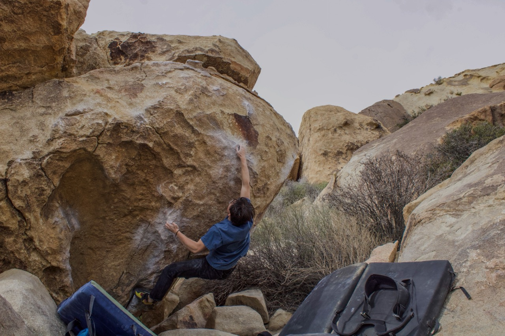

Photo by: Andrew Parodi
Climbing became part of my life in my junior year of highschool. I tried it once in January of 2022, but
did not start consistently going until March of that year. Ever since then it has been the center of my
life. It has given friends, jobs, and helped me develop clear life goals after graduation. It has driven
me to become more adventurous and helped me through many points of life. I wouldn't be where I am today
if I had not tried out climbing that winter.
Climbing has also enabled my other creative passion to flourish. I have not had much time to dedicate to
videography and photography
yet but I have made a handful of projects.
Below is a video I shot with my friends and edited to cover our trip out to Joshua Tree National Park in
the spring of 2024.
Another video below was a single cam production I did entirely myself. I was just trying out different
shots and angles at my climbing wall
at home.